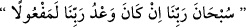

“Sübhâne rabbinâ in kâne va‘dü rabbinâ lemefûlâ” yani “Rabb’imizin şânı
yücedir. Rabb’imizin va‘di mutlaka yerine getirilir.” (el-İsrâ, 17/108) sözünü
eklemelidir. Fussılet veya A’râf suresindeki secde ayetini okuyan kimse:
“Allâhümme’c’alnî mine’s-sâcidîne li-vechik, el-müsebbihîne bi-hamdik ve eûzü
bike en ekûne mine’l-müstekbirîne an emrik” demelidir. Bunun manası: “Allah’ım,
beni senin rızan için secde edenlerden ve seni hamdinle tesbih edenlerden kıl.
Allah’ım, kibirlenip emrini tutmayanlardan olmaktan sana sığınırım.” demektir.
Secde suresindeki secde ayetini okursa:
“Allâhümme’c‘alnî min ibâdike’l-mün‘amîne aleyhim el-mehdiyyîne’s-sâcidîne
lek el-bâkîne inde tilâveti kitâbik.” demelidir. Manası: “Allah’ım beni, kendilerine
nimet verdiğin, hidayete eriştirdiğin, yalnızca sana secde eden ve kitabının tilâveti
esnasında ağlayan kullarından eyle!” demektir. Necm suresindeki secde ayetini okursa;
“Allâhümme’c‘alnî mine’l-bâkîne ileyk el-hâşiîne lek.” demelidir. Manası;
“Allah’ım beni, senin için ağlayan ve senden korkan kullarından eyle.” demektir.
Ahî Çelebi Efendi der ki: Bir kimse hiç dua okumadan tilâvet secdesi yapmış olsa
geçerli olur. Çünkü bu secde namaz secdesinden daha önemli değildir. Dinleyenin
okuyanla beraber secde etmesi ve ondan önce başını secdeden kaldırmaması
müstehabdır. Çünkü okuyan, dinleyenin imamı durumundadır. Hangi secde ayeti için
olduğunu belirtmek gerekli olmamakla birlikte tilâvet secdelerini yaparken niyet şarttır.
Hatta bir kimsenin yapması gereken çok sayıda tilâvet secdesi olsa onların sayısı kadar
secde yapmalıdır. “Bu secde bu ayet için, bu secde de şu ayet için.” demesine gerek
yoktur.
Dinleyen secde yapmak için uygun halde değilse, onu günaha girmekten korumak
gayesiyle Kur’an okuyan, secde ayetini gizli okumalıdır. Fakat dinleyenin durumu
uygunsa ibadete teşvik maksadıyla secde ayetini açıktan okumak müstehab olur.
İmam Habbâzî, Hidâye Haşiyesi’nde der ki: Her anıldığında Peygamberimiz